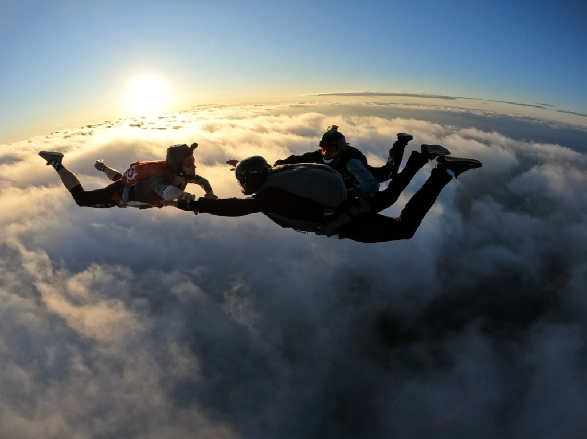

Od boiska po spadochron...
Od 7 roku życia moje życie to piłka nożna — gdzie ocierałem się o młodzieżową reprezentację Polski. Btw. w 2013 roku byłem kapitanem reprezentacji Polski na Mistrzostwach Świata w piłkę nożną uliczną. Skoki zacząłem stosunkowo późno, zwłaszcza że mój brat skakał już, jak miałem 10 lat… (długa historia).
Na teorię zapisałem się trochę przypadkowo… Teorię miałem 12 lipca 2019 roku, a swój pierwszy zajebisty skok 13 lipca 2019 z dwoma instruktorami. Nie ukrywam, że pierwszy skok był tak zajebistym uczuciem (dużo lepszym niż tandem), bo czułem totalną wolność i lekkość — oczywiście dodatkowo nakręcił mnie mój brat, że zajebisty skok, a to jednak jest ważne na początku przygody, jak instruktorzy są mega zadowoleni ze skoku. Natomiast i tak najważniejszy jest feeling — nieważne, czy zrobiłeś wszystko, co zakładałeś: liczy się to uczucie. Więc po pierwszym skoku „wpadłem” w ten sport, ale… jeszcze nie całkowicie.

Po AFFie…
Po kursie, który zrobiłem w 5 skokach, przyszedł czas na skoki samodzielne (do tzw. ŚK — 50 skoków). Przyznam, że te skoki do ŚK-i to była bardziej walka z adrenaliną i jakby nie patrzeć bardziej spadanie niż latanie. Droga do ŚK-i (50 skoków) zajęła mi 2 lata (pierwszy sezon 14 skoków, drugi sezon dobiłem do 50 — rzutem na taśmę zaliczyłem ŚK-i), więc raczej skakałem sporadycznie na spokojnie.
Lęk wysokości?
Na szczęście z samolotu tego się tak nie odczuwa, bo wysokość jest zbyt duża. Paradoksalnie większy dyskomfort czuje się na 20, 50 czy 150 m niż 4000 m. Z 4000 m widok jest jak po włączeniu Google Maps, więc nie było źle, ale i tak wolałem wyskakiwać początkowo nie patrząc w dół, a najbardziej lubiłem, jak były chmurki, bo nie było widać ziemi. Oczywiście z czasem człowiek się oswaja, ale tak jak mówię: pierwsze 50 skoków to walka z pulsem.
Wpadłem…
Tak naprawdę wkręciłem się na maxa od ŚK-i, jak już mogłem skakać z ludźmi. Pamiętam, jak przyjechałem na strefę — planuje się na wylot, a ktoś do mnie podszedł i pyta, co lecę… Co było dla mnie szokiem, że ktoś chce, żebym leciał z nimi. I wtedy zobaczyłem, że to już nie jest spadanie, a latanie — bo trzeba do kogoś dolecieć i realnie widzisz punkt odniesienia, jak zmieniając pozycje ciała zbliżasz się do grupy. To rozwaliło mi głowę i chciałem jak najszybciej się tego nauczyć.
Filmik pokazujący, jak wygląda zabawa od 50. skoku…
Otwórz ten sam film na YouTube
Ponad 300 skoków rocznie…
W pierwszym sezonie od ŚK-i zrobiłem ponad 300 skoków — i tak już co roku…
Kamerka od 200 skoków
To był pierwszy etap, na którym mi zależało, bo fajnie jednak latać z kamerką i wspólnie z bliskimi móc obejrzeć skok.
Ponad 1000 skoków
Dzisiaj mam ponad 1300 i zrobiłem uprawnienia instruktorskie — można powiedzieć, że kolejny fajny etap przede mną…
Ambicja? skill? frustracja…
Był taki moment w skokach, gdzie mocno skupiałem się na skillu i chciałem jak najszybciej zdobywać umiejętności — chciałem nauczyć się latać płasko, sita, heada, tracki… Niestety w tym sporcie trzeba być cierpliwym, a ja przez to, że nie należę do osób cierpliwych, często wręcz się frustrowałem, że jeszcze czegoś nie umiem. Ambicja z jednej strony to dobra cecha, z drugiej… zrozumiałem, że nie do końca o to chodzi, żeby za wszelką cenę dążyć do perfekcji (choć w tym sporcie słowo perfekcja nie istnieje — zawsze jest coś do poprawki) i to jest właśnie piękne. Dzisiaj mam podejście takie, że nauka — nauka i trzeba się rozwijać, ale najważniejsze jest to, żeby skoki cieszyły — i tak jest. Każdy skok jest zajebisty… no dobra, prawie każdy. Najważniejsze, że zrozumiałem: nie chodzi o cel — tu droga jest najpiękniejsza.
Piękno sportu
Piękne w tym sporcie jest to, że każdy etap jest zajebisty, każdy etap cieszy. Na AFFie cieszy pierwszy obrót, pierwsze wyjście na plecki… Potem kolejne etapy cieszą, jak czujesz, że wyjścia wychodzą, jak pierwsze tracki jesteś blisko, jak pierwszy raz polecisz sita itd.
Czym są skoki dla mnie?
Dla mnie skoki spadochronowe to totalna wolność, prawdziwe tu i teraz. Ktoś mógłby powiedzieć: ale to tylko minuta… Tak, wydaje się niewiele, ale to jest aż jedna minuta właśnie tego stanu tu i teraz — totalna nirwana, gdzie mózg jest totalnie wyłączony na jakiekolwiek myśli, problemy, zmartwienia — nie istnieją. Każdy z nas na dole ma swoją walkę, każdy nosi swój krzyż… Wyskakując z samolotu nie ma nic — jest tylko tu i teraz.